In this assignment, we were asked to implement a mesh editor with the following functionalities:
A Bezier curve is defined by its control points. If it has two control points, $P_0$ and $P_1$, then the curve parametrized by $t$ is simply a linear interpolation $$B(t) = P_0 + t (P_1 - P_0) = (1 - t) P_0 + t P_1, \quad t \in [0, 1]$$ If the curve has three control points $P_0$, $P_1$, and $P_3$, the curve can be interpreted as performing linear interpolation on two interpolated points generated on edge $P_0P_1$ and $P_1P_2$. The algebraic form can be $$B(t) = (1-t)[(1 - t) P_0 + t P_1] + t[(1 - t) P_1 + t P_2], \quad t \in [0, 1]$$ For multiple control points, the idea to generate the Bezier curve can be performing multiple time linear interpolation level by level recursively until we get only one interpolated point and that is the point on the Bezier curve. Consequently, this recursive interpolation method is exactly the 1D de Casteljau algorithm to evaluate the Bezier curve.
In my implementation, it simply performs the linear interpolation for the current point and next point. The code is similar to
for (size_t i = 0; i < points.size() - 1; i++) {
Vector2D interpolated_point = (1 - t) * points[i] + t * points[i + 1];
results.emplace_back(std::move(interpolated_point));
}
In my evaluation, I created a bzc file with the following content:
6
0.200 0.200 0.300 0.400 0.500 0.500 0.700 0.400 0.900 0.300 1.100 0.200
which has 6 control points. The figures are shown below.
|
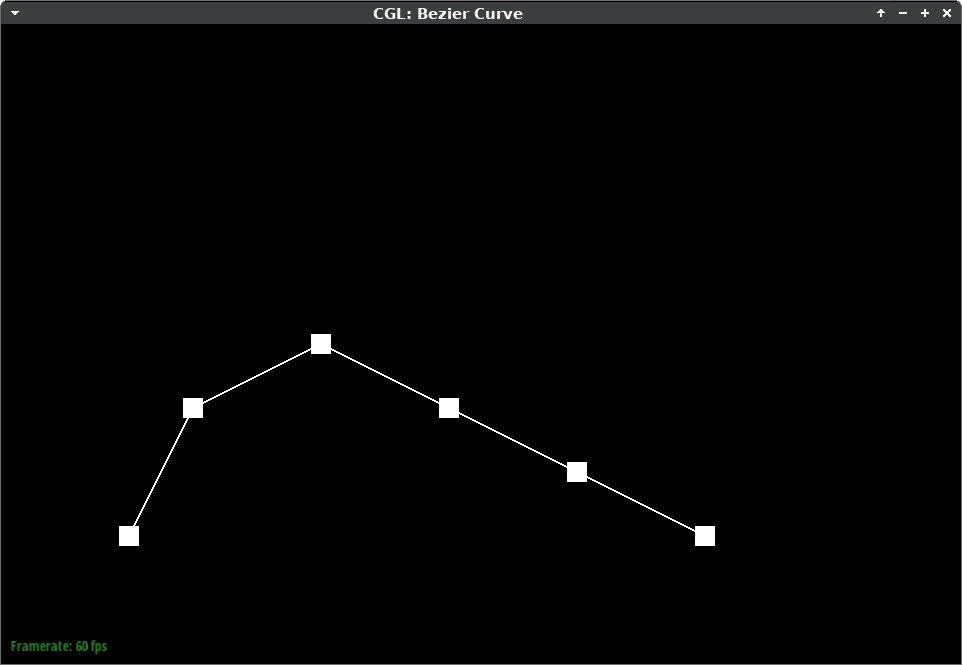
|
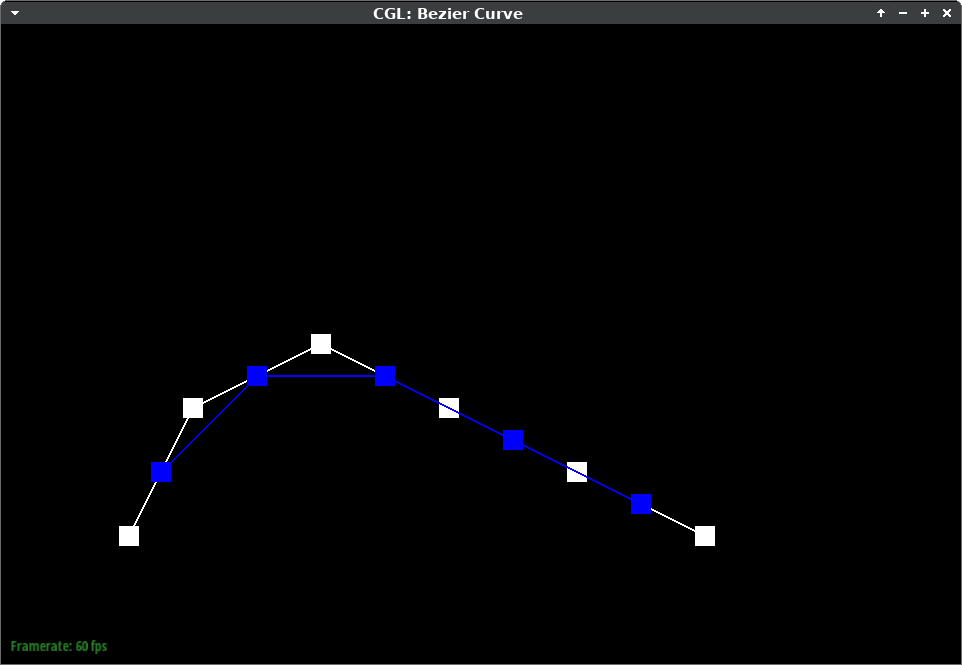
|
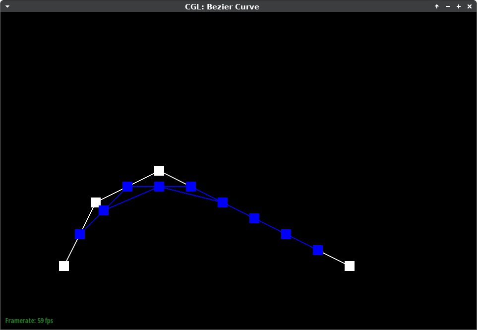
|
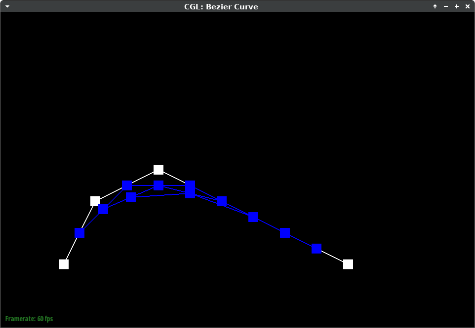
|
|
|
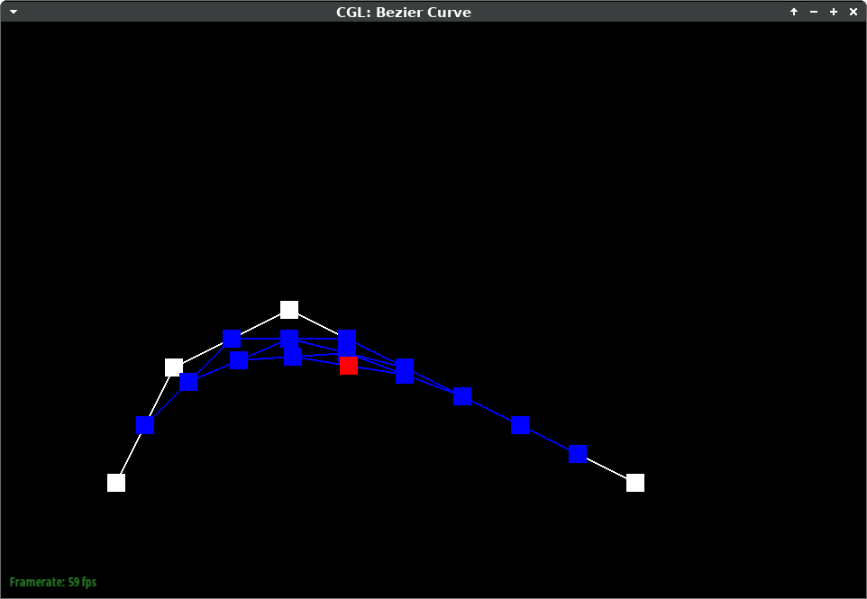
|
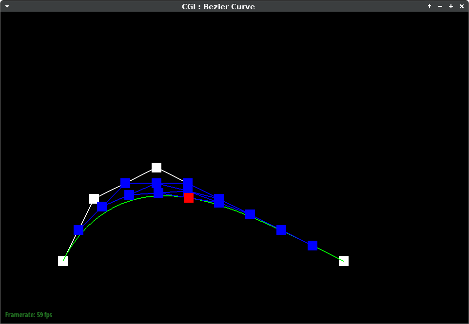
|
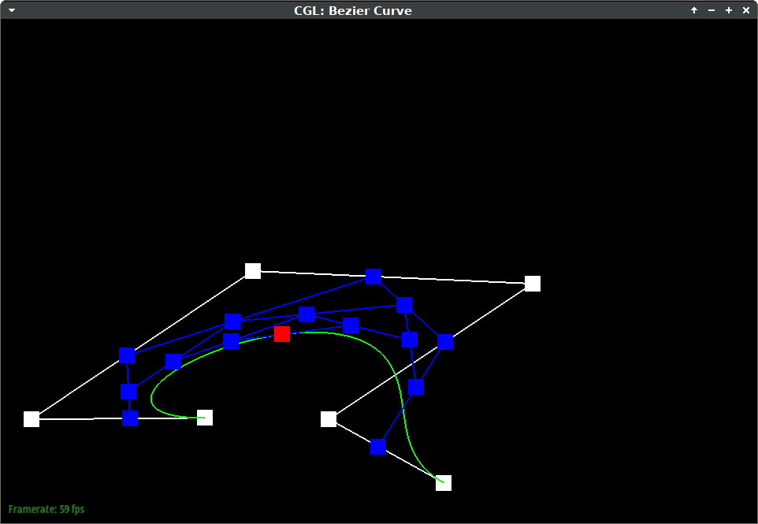
|
Bezier surfaces can be regarded as a mapping $f: (u, v)\in\mathbb{R}^2 \rightarrow \mathbb{R}^3$. In this part, the idea to created a Bezier surface is to use the first set ($u$ dimension) of control points to create a set of Bezier curves and the points on these curves can be regarded as another set of control points for the Bezier curves at the $v$ dimension.
To be more specifically, we have a control point set in std::vector< std::vector< Vector3D > >.
The outer vector means the row of control points $P_{i0},\dots,P_{i(n-1)}$. Each row can
generate a Bezier curve parametrized by $u$. The Bezier curves generated from each row
can generate another set of points (dynamically) say $B_0(u), \dots, B_{n-1}(u)$ by setting the parameter $u$.
We can generate Bezier curves from these control points parametrized by $v$. By
realizing these, we have accomplished this Bezier surface 2D mapping.
In the implementation part, the code for BezierPatch::evaluateStep(...) is actually
the same for the code in Part 1. In the code of >BezierPatch::evaluate1D(...)
I have implemented both methods of iterative 1D de Casteljau evaluations and algebraic forms
of the Bezier curve, since the algebraic form is just
$$B(t) = \sum_{i=0}^n \text{binomial}(n, i) (1-t)^{n-i}t^i P_i $$
The code for this is shown as below
constexpr size_t binomial_coefficient(size_t n, size_t k) noexcept {
return
(k > n) ? 0 :
(k == 0 || k == n) ? 1 :
(k == 1 || k == n - 1) ? n :
(k + k < n) ?
(binomial_coefficient(n-1, k-1) * n) / k :
(binomial_coefficient(n-1, k) * n) / (n-k);
}
Vector3D BezierPatch::evaluate1D(std::vector<Vector3D> const &points, double t) const
{
Vector3D result;
#ifdef IS_ALGEBRAIC
const size_t n = points.size() - 1;
for (size_t i = 0; i < points.size(); i++) {
result += (double)binomial_coefficient(n, i) * pow(1-t, n-i) * pow(t, i) * points[i];
}
#else
std::vector<Vector3D> temp = points;
for (size_t i = 0; i < points.size() - 1; i++) {
temp = evaluateStep(temp, t);
}
result = temp[0];
#endif
return result;
}
A side note is that at first I thought the algebraic form will be much faster than
the iterative evaluation one, since there are less memory allocation, but the performance
are almost the same. Maybe if the number of control points are known at compile time
the constexpr function can take its advantage during compile time. The evaluated
teapot figure is shown below.
This part is to iterate faces around a vertex and generate the area-weighted normal for the vertex. Basically, the code is similar to this
do {
FaceCIter f = h->face();
double area = ::area(f);
normal += area * f->normal();
h = h->twin()->next();
} while(h != this->halfedge());
Below shows the difference between flat and Phong shading.
|
|
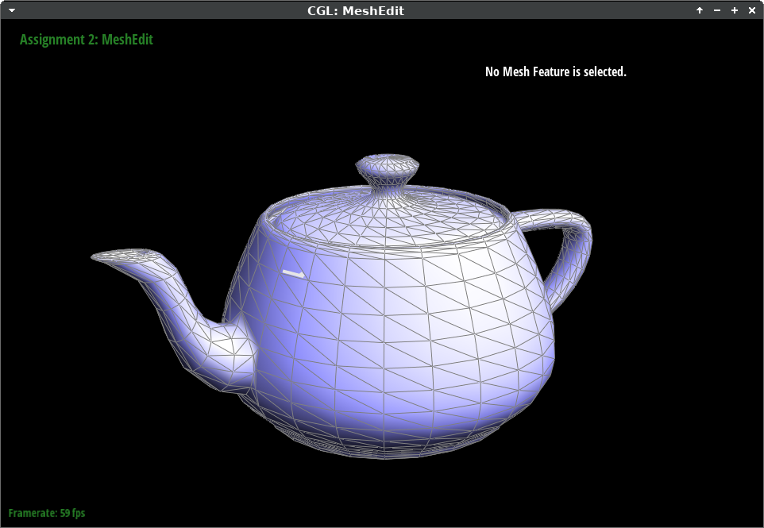
|
The important part for this edge flip task is to correctly set every triangle's halfedges, vertices, edges, and faces. Some of the variables may not be changed if you forget to set them at the first time. My implementation simply follows the recommendation from the handout.
EdgeIter HalfedgeMesh::flipEdge( EdgeIter e0 )
{
if (e0->isBoundary())
return e0;
auto h0 = e0->halfedge();
auto h1 = h0->next();
auto h2 = h1->next();
auto h3 = h0->twin();
auto h4 = h3->next();
auto h5 = h4->next();
auto h6 = h1->twin();
auto h7 = h2->twin();
auto h8 = h4->twin();
auto h9 = h5->twin();
auto v0 = h0->vertex();
auto v1 = h3->vertex();
auto v2 = h2->vertex();
auto v3 = h5->vertex();
auto e1 = h1->edge();
auto e2 = h2->edge();
auto e3 = h4->edge();
auto e4 = h5->edge();
auto f0 = h0->face();
auto f1 = h3->face();
// changing
h0->setNeighbors(h1, h3, v3, e0, f0);
h1->setNeighbors(h2, h7, v2, e2, f0);
h2->setNeighbors(h0, h8, v0, e3, f0);
h3->setNeighbors(h4, h0, v2, e0, f1);
h4->setNeighbors(h5, h9, v3, e4, f1);
h5->setNeighbors(h3, h6, v1, e1, f1);
h6->setNeighbors(h6->next(), h5, v2, e1, h6->face());
h7->setNeighbors(h7->next(), h1, v0, e2, h7->face());
h8->setNeighbors(h8->next(), h2, v3, e3, h8->face());
h9->setNeighbors(h9->next(), h4, v1, e4, h9->face());
v0->halfedge() = h2;
v1->halfedge() = h5;
v2->halfedge() = h1;
v3->halfedge() = h4;
e0->halfedge() = h0;
e1->halfedge() = h5;
e2->halfedge() = h1;
e3->halfedge() = h2;
e4->halfedge() = h4;
f0->halfedge() = h0;
f1->halfedge() = h3;
return e0;
}
Below shows the difference before and after edge
flip operations.
|
|
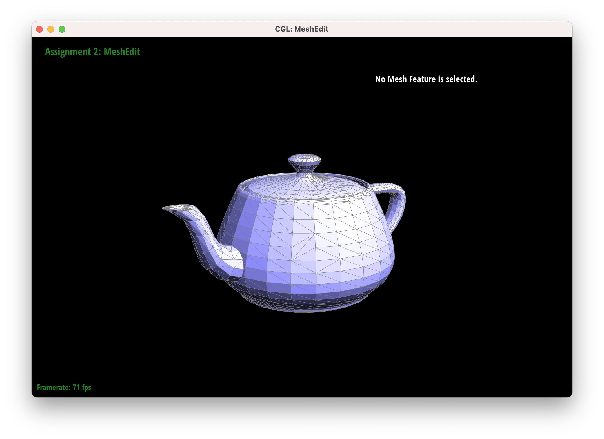
|
The core idea for this edge split operation is to allocate necessary objects for for the new triangles. For the boundary part, it shares the same idea with the 2 → 4, except that it does not need to allocate more triangles. In the boundary, a split operation creates two triangles, but we need to take care of the halfedges on the virtual boundary face. A very subtle bug occurred in my code and eventually affected my code in Part 6. I did not set the new halfedges to some of the vertices, which made the vertex position update not correct in the Part 6 creating lower area in the subdivided mesh. Below shows some of the demo figures of this part.
|
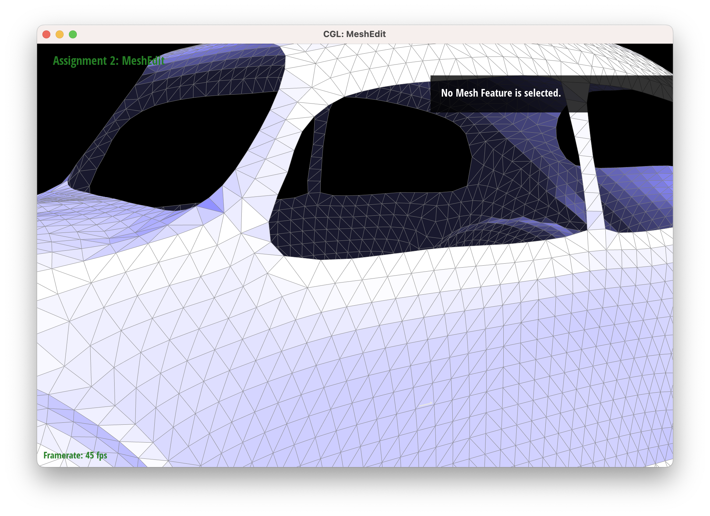
|
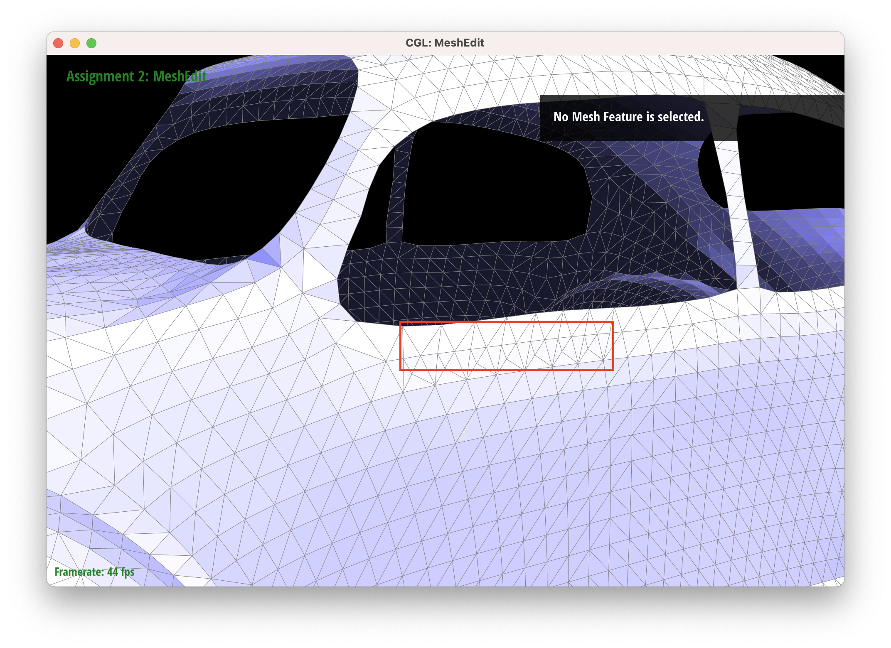
|
|
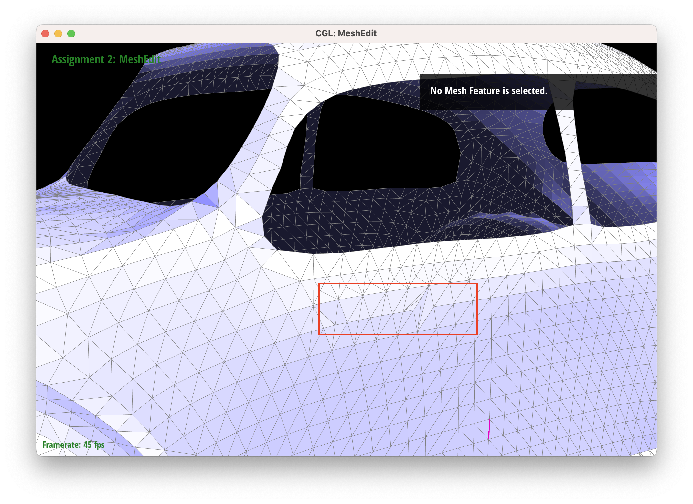
|
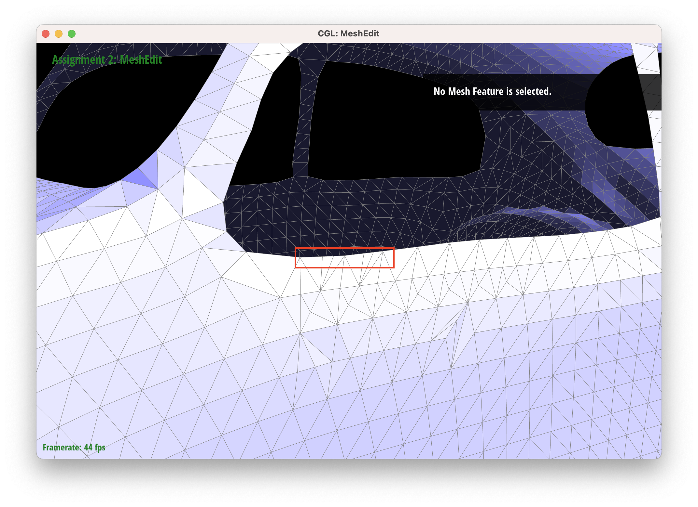
|
In this part, the loop subdivision technique for mesh upsampling is implemented. Basically we first store the new vertex positions of the original and to-be-allocated vertices. Then we perform some split and flip operations on edges. Finally, we update the vertex positions. The sharp corners in most of the meshes will become more smooth after some rounds of loop subdivision. However, some of the corners (e.g. in the cube mesh) does not behave symmetrically. This is probably because the initial distribution is asymmetric. After performing pre-splitting on each face, the subdivided cube mesh looks more symmetric and smooth.
|
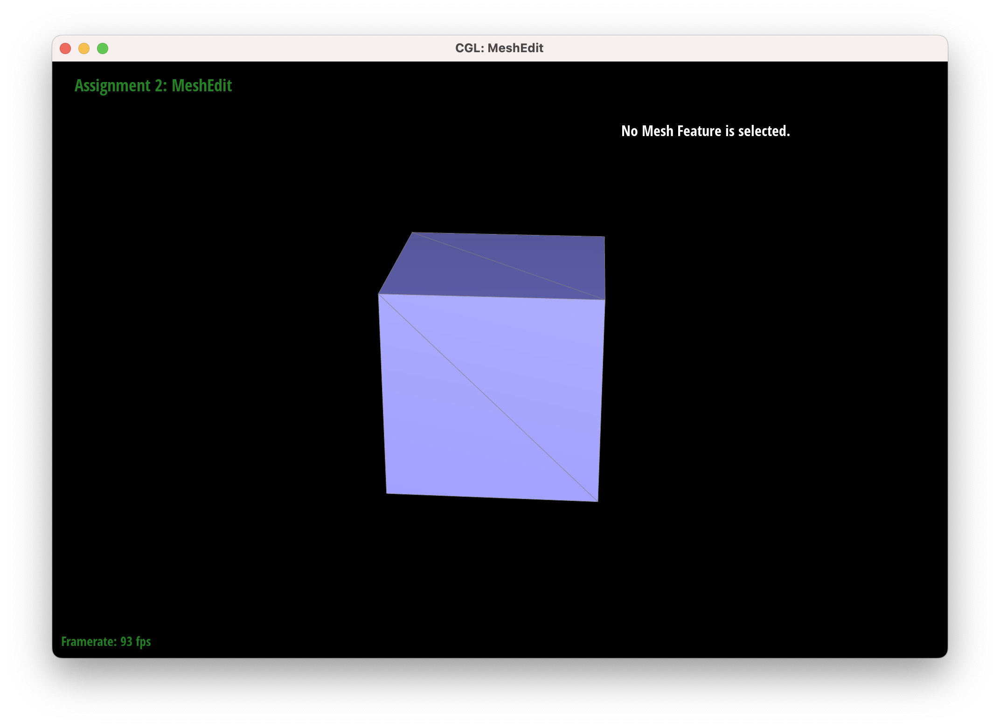
|
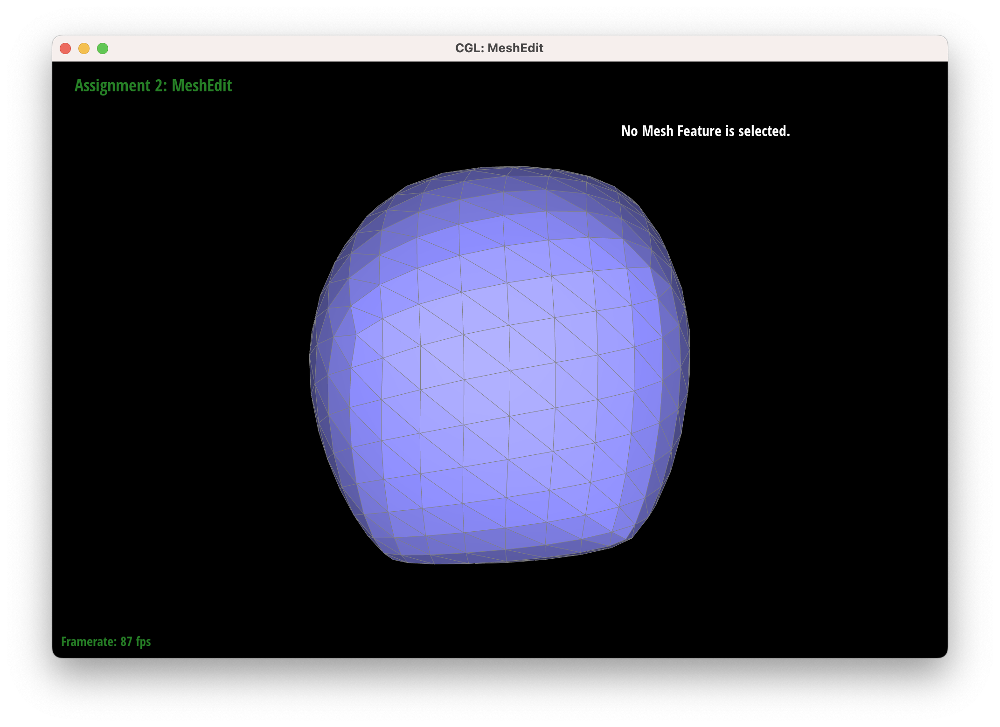
|
|
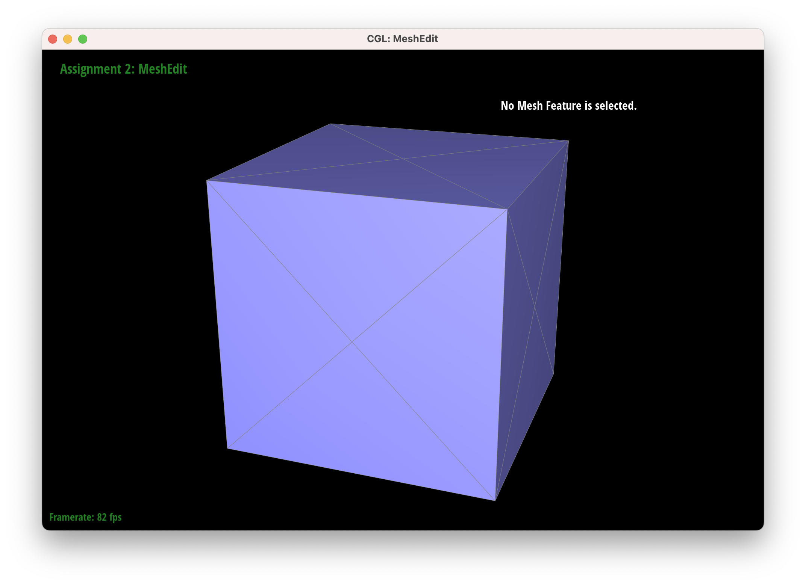
|
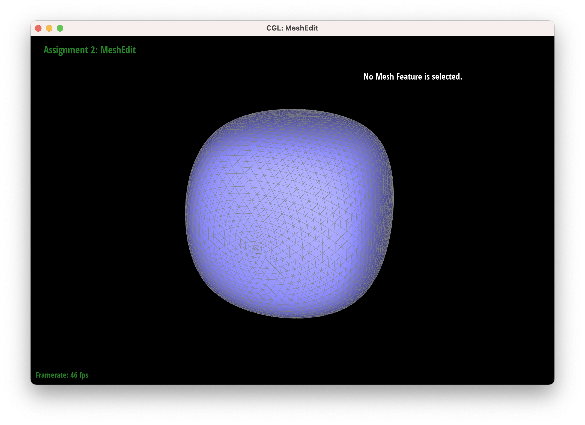
|
I have also implemented loop subdivision for boundary cases. The vertex update rule is slightly different than the usual ones. I referred to the Pixar document (link). For loop subdivision, the update rules for the original vertex and new vertex are listed below
|
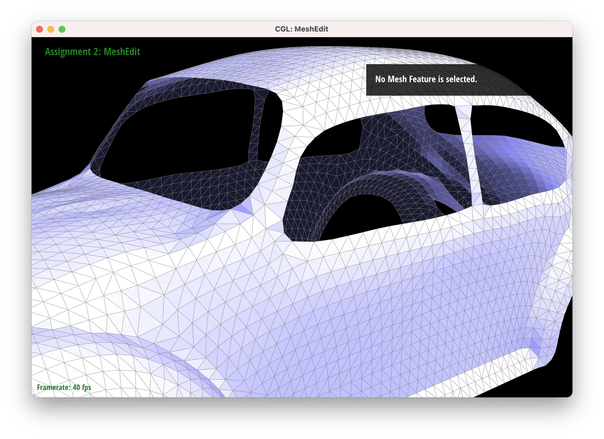
|
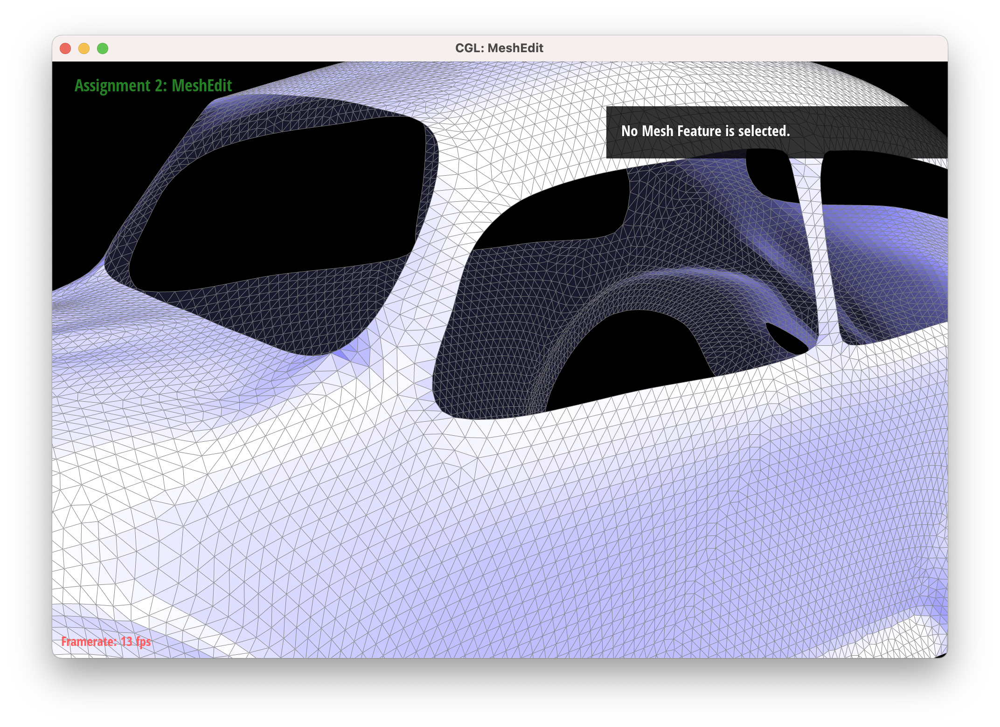
|